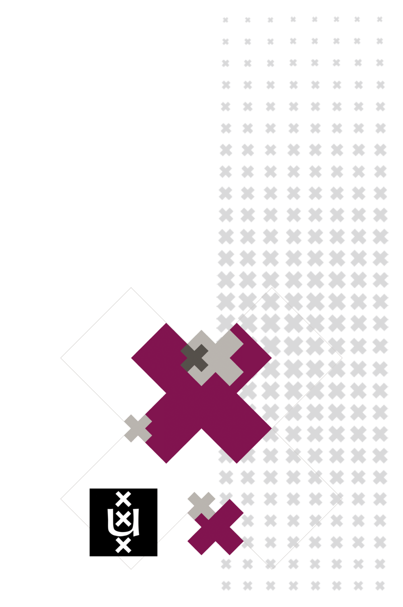

Mathematics 1 for Economics
Seminar 1 Jeroen Eijkens
Slide 2 
The Lorenz Equations
\[\begin{aligned} \dot{x} & = \sigma(y-x) \\ \dot{y} & = \rho x - y - xz \\ \dot{z} & = -\beta z + xy \end{aligned} \]